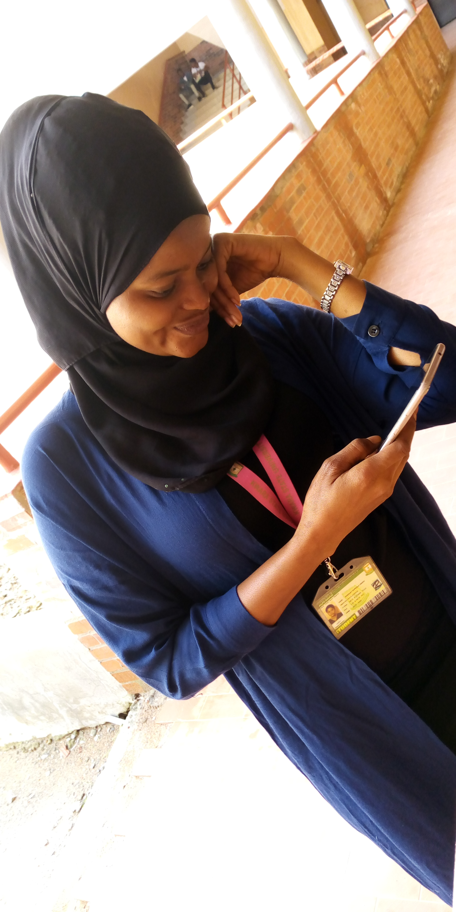

my achievement

MY ACHIEVEMENT
Achievement is the heart of achieving something. The act of achieving or performing; an obtaining by exertion; and a successful performance.
To be honest, the greatest accomplishment in my life is not easy topic to talk about. My achievement started after I graduated from Secondary School.
this made me became a. I started learning Fashion Design for some years and I later with the grace of God obtained my Certificate of
Apprenticeship which I was enormously boss on my own. Therefore, I started teaching people on how to cut and sew cloth. I am always happy while teaching
them because I saw it as a one the great achievement life. Later, I noticed that I have to forward my academic and that made me sought for the admission
into Kwara State Polytechnic Ilorin, where I studied Public Administration. And after I graduated from Kwara State Polytechnic, later in the year 2018 I
was admitted into Kwara State University, Malete and I was given Library and Information Science Course which I found so interesting and I seen all these
as part of my great achievement in life
Written by Umaru Khadijat Dupeola
Department of Library and Information Science
Matric Number: 18/47LS/00930
click here
Click to Homepage